高血压分标规则调整
老逻辑：
每日定时处理
高血压分层判断逻辑
高血压分标判断逻辑
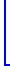
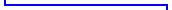
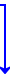
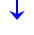
分层完成
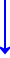
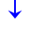
分标完成
随访任务生成
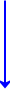
红标会进行
危机值干预
90天内无血压
数据
自动生成一条“血压监测提醒”任务
完成随访任务
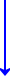
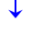
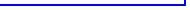
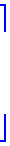
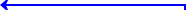
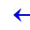
根据血压达标情况+当前分层情况
生成下一个随访任务
高血压的任务生成逻辑
需要调整成：
仅根据分层情况生成下一个随访任务
分层
首次分层
发生变层
高危层
生成高血压日常随访任务，任务标题为“高血压日常随访任务”，来源“分层管理”
数量：1个
计划执行时间：本次分层发生日期后的第30日
情形1：当下个“来源：分层管理”的高血压随访任务日期早于或等于当日后的30日，则不做任务删除处理；
情形2：当下个“来源：分层管理”的高血压随访任务日期晚于当日后的30日，则删除该任务，生成高血压日常随访任务，数量：1个，计划执行时间：本次分层发生日期后的第30日，任务标题为“高血压日常随访”，来源“分层管理”
中危层
生成高血压日常随访任务，任务标题为“高血压日常随访任务”，来源“分层管理”
数量：1个
计划执行时间：本次分层发生日期后的第60日
情形1：当下个“来源：分层管理”的高血压随访任务日期早于或等于当日后的60日，则不做任务删除处理；
情形2：当下个“来源：分层管理”的高血压随访任务日期晚于当日后的60日，则删除该任务，生成高血压日常随访任务，数量：1个，计划执行时间：本次分层发生日期后的第60日，任务标题为“高血压日常随访”，来源“分层管理”
低危层
生成高血压日常随访任务，任务标题为“高血压日常随访任务”，来源“分层管理”
数量：1个
计划执行时间：本次分层发生日期后的第90日
情形1：当下个“来源：分层管理”的高血压随访任务日期早于或等于当日后的90日，则不做任务删除处理；
情形2：当下个“来源：分层管理”的高血压随访任务日期晚于当日后的90日，则删除该任务，生成高血压日常随访任务，数量：1个，计划执行时间：本次分层发生日期后的第90日，任务标题为“高血压日常随访”，来源“分层管理”
来源为“分层管理”的“高血压日常随访”任务 ，完成后会自动生成下个任务
分层
来源为“分层管理”的“高血压日常随访”任务 ，完成后
高危层
生成高血压日常随访任务，任务标题为“高血压日常随访”，来源“分层管理”
数量：1个
计划执行时间：本次任务完成日期后的第30日
中危层
生成高血压日常随访任务，任务标题为“高血压日常随访”，来源“分层管理”
数量：1个
计划执行时间：本次任务完成日期后的第60日
低危层
生成高血压日常随访任务，任务标题为“高血压日常随访”，来源“分层管理”
数量：1个
计划执行时间：本次任务完成日期后的第90日
#1
#2
分标
首次分标 或 发生变标
红标
生成高血压日常随访任务，任务标题为“高血压危机值干预”，来源“分标管理”
数量：1个
计划执行时间：本次分标发生日期后的第7日
黄标
不产生分标管理类的任务
绿标
不产生分标管理类的任务
来源为“分标管理”的“高血压危机值干预”任务 ，完成后会自动生成下个任务
分标
来源为“分标管理”的“高血压危机值干预”任务 ，完成后
红标
生成高血压日常随访任务，任务标题为“高血压危机值干预”，来源“分标管理”
数量：1个
计划执行时间：本次任务完成日期后的第7日
黄标
不产生分标管理类的任务
绿标
不产生分标管理类的任务
💡借此机制让患者的近期血压数据趋于正常，降到黄绿标
💡借此机制让任务不会无限数量生成，需要健管师做到日清
否则任务会越来越少
#3
#1
#2
根据“分标管理”产生任务
根据“分层管理”产生任务
#3
根据“指标未更新”产生任务
本期新增
本期新增
血压（任意时段的收缩压舒张压）在90天没有更新数据，则生成一条任务：
任务类型：血压监测提醒（新类型）
任务标题：血压监测提醒
随访表单：血压监测提醒（新表单）
来源：“指标长时间未更新”
表单内容：
血压监测提醒

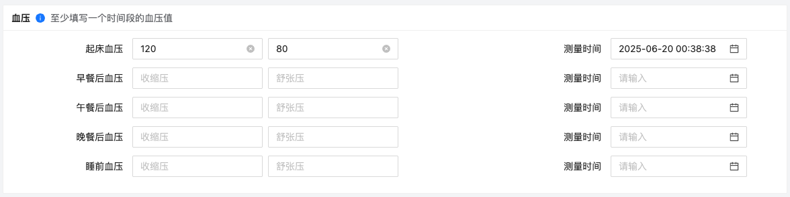
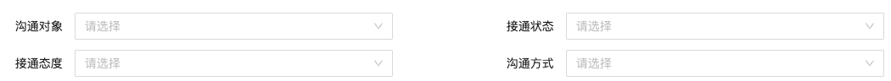
原逻辑为需要根据“在随访时，看看血压是否达标，来判断是否生成日期更近的随访（达标了才会按分层去生成）”，需要调整：
#1.1
#1.1
30天没有随访
自动生成一条“长时间未触达提醒”任务